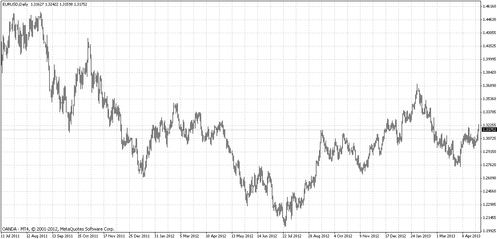

What is forex?
The forex, or foreign exchange, market is an international marketplace for the buying and selling of currencies. In an international monetary transaction, the forex market is used to determine how much a unit of a currency is worth versus a unit of another currency. Since the world is now a global marketplace, the forex market also influences the prices of goods and services domesticaly.
Why do people trade forex?
In forex, currency is traded in pairs, and each currency has a price. For instance, the price of the EUR/USD currency pair denotes how many United States Dollars one Euro is worth. At the time of writing, the price for EUR/USD is 1.3178, which means one Euro equals 1.3178 United States Dollars. Forex is an open, capitalistic market, and so the price of a currency pair at any given time is determined by buyers and sellers. Because of this the price of a currency pair fluctuates. People trade forex just like they do the stock market: they hope to take advantage of market movements in order to make a profit.
An Example.
Suppose you have $100 United States Dollars (USD) that you want to trade for Euros (EUR). You think the price of EUR is going to go up relative to the price of USD, so you place a buy order at the current price, 1.3178. With your $100, you get €75.8840 EUR. You go run an errand, and two hours later you come back, and the price of EUR has gone up to 1.516! You sell your EUR and get back $115.04 USD, for a profit of $15.04. While this may not seem like much, most forex traders trade on 20:1 margin, so they would have used their $100 to buy €1517.68 EUR, and then sold it back to get $2300, for a profit of $782.32, all in two hours!
How can forex be predicted?
Even though currency pairs fluctuate, the price of a currency pair fluctuates within a clearly defined boundary. This is because people have a price in their mind that they think a currency pair is worth; so if a currency pair has too high of a price, people will stop buying that currency pair and start selling it, lowering the price. Likewise, if a currency pair has too low of a price, people will stop selling that currency pair and start buying it, raising the price. Since currency pairs fluctuate within boundaries, we can use statistical hypothesis testing to determine the direction a market is moving.
A graph.
The following graph shows a real example of how the forex market fluctuates. The graph is of the EUR/USD price over the time period of July 2011-April 2013. By looking at the graph you can clearly see the price resistence levels, the levels where EUR/USD reached the top and bottom of a fluctuation.

The indicator.
The Hypothesis Testing Indicator uses a standard statistical hypothesis test to determine whether the currency pair will reach your target price. Because it uses a statistical hypothesis test as a baseline, it can tell you if the currency pair will definetly not reach not reach your target price, but it cannot tell you for sure that the currency pair will not reach your target price.
The Hypothesis Testing Indicator takes what kind of trade you are making (buying or selling), the price you will exit the trade at, and a series of data points, as inputs. The data points can be anything you want, but I recommend that you use the low prices of the forex pair if you are buying, and the high prices of the forex pair if you are selling, just to be on the safe side. The more data points you input, the more accurate the indicator's prediction will be.
The indicator then uses these inputs as inputs to a statistical hypothesis test. It also calculates the mean, variance, and standard deviation for the data points. It then determines whether or not H-not can be thrown out. H-not in the indicator is the hypothesis that the price will reach the exiting price. H-alternative is the hypothesis that the price will not reach the exiting price. If the indicator can throw out H-not, then the currency pair will not reach the exiting price for sure. If the indicator cannot throw out H-not, then the price may or may not reach the exiting price. However, in the forex market not reaching your exiting price is just as bad as losing money, so the indicator will recommend that you do not make a trade in this instance.
Statistical hypothesis testing is a complicated subject, so if you are still confused as to what it is, I recommend you read the Wikipedia page on the subject.
Keep in mind that because the forex market moves rapidly, no indicator can predict a currency pair movement with absolute certainty, so use your discretion in all trades. However, an indicator can give you a sense of whether or not you should execute a trade, with pretty good certainty.
Play with the indicator!
The indicator is written in Javascript, and you can play with it online.
Learn more.